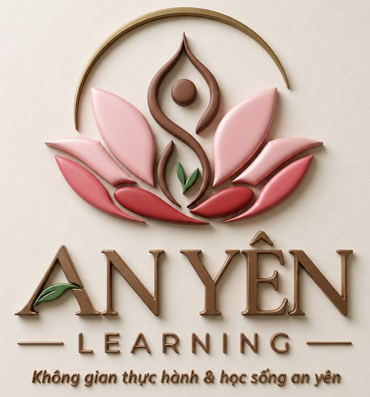
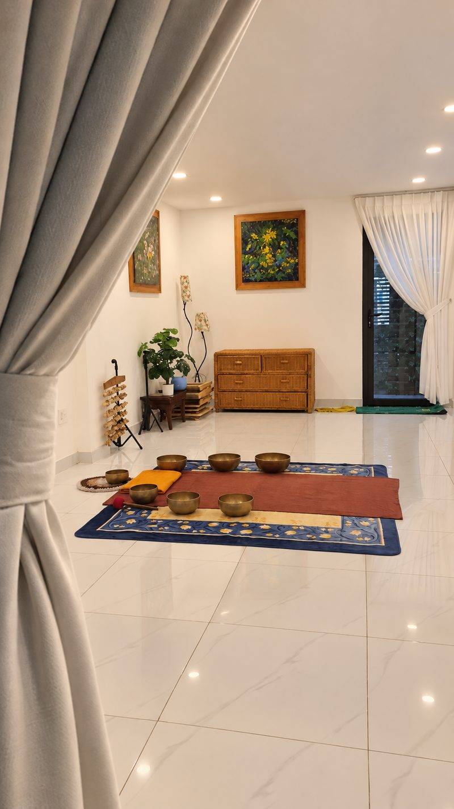
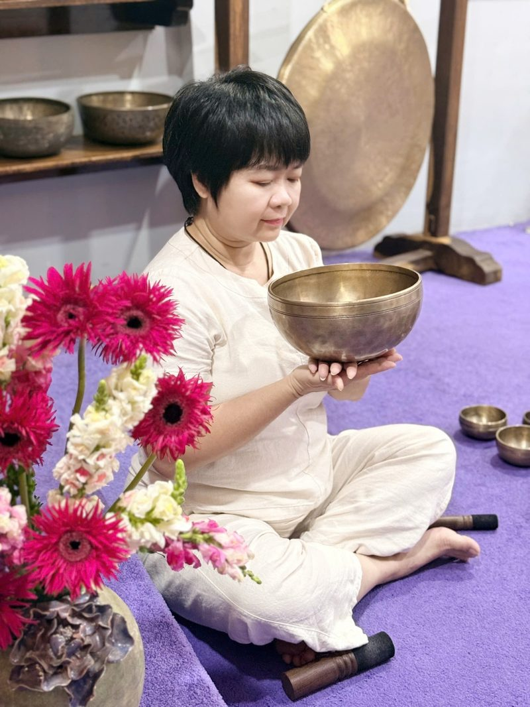
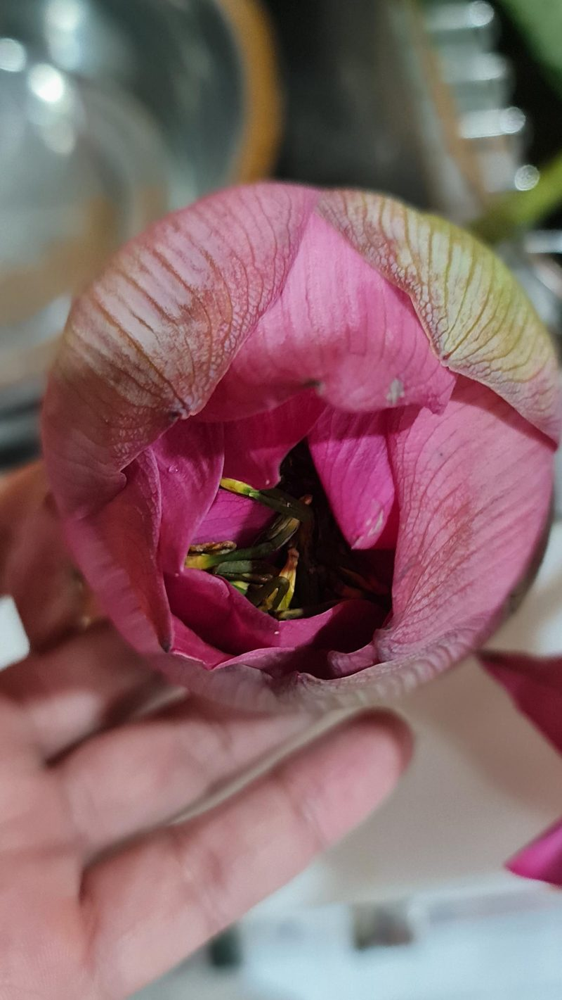
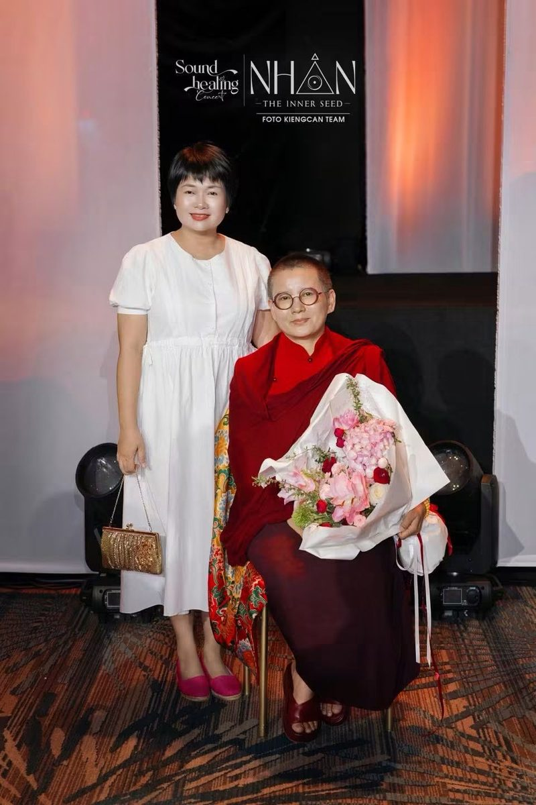
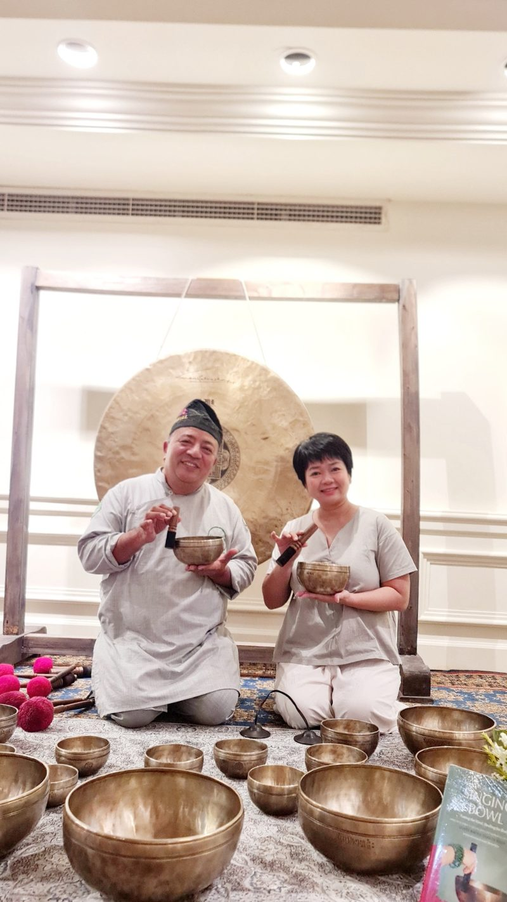

Thiền & Chánh niệm
Trở về nghe hơi thở, chạm vào phút giây hiện tại. Một tiếng chuông ngân, một khoảng lặng dịu êm, để thân được thư giãn, tâm được nghỉ ngơi và lòng thêm an nhiên giữa những bộn bề cuộc sống.

Không gian thực hành & học sống an yên
Một không gian để chậm lại, lắng nghe cơ thể và học những kỹ năng giúp bạn sống nhẹ nhàng hơn mỗi ngày. Thiết thực, ấm áp, không cầu kỳ.
Triết lý
An Yên không phải spa, không phải phòng tập yoga, cũng không phải trung tâm tâm linh. Đây là nơi bạn học cách thở, lắng nghe và điều hòa cảm xúc bằng những phương pháp rõ ràng, dễ áp dụng, có nền tảng khoa học.
Chúng tôi nói bằng ngôn ngữ đời thường, thực hành bằng những bước nhỏ, và tôn trọng nhịp của từng người.
Chương trình
Trở về nghe hơi thở, chạm vào phút giây hiện tại. Một tiếng chuông ngân, một khoảng lặng dịu êm, để thân được thư giãn, tâm được nghỉ ngơi và lòng thêm an nhiên giữa những bộn bề cuộc sống.
Những chuyển động nhẹ nhàng, an toàn, giúp cơ thể mềm lại và tâm trí lắng xuống, phù hợp cho cả người mới bắt đầu.
Hiểu mình để thấu hiểu người, lắng nghe để kết nối yêu thương. Cùng học cách nhận diện cảm xúc, giao tiếp tích cực và chăm sóc tâm trí, để bình tĩnh hơn trước áp lực, vững vàng hơn trong công việc và nhẹ nhàng hơn trong cuộc sống.
Hiểu mình, đặt mục tiêu vừa sức và duy trì thói quen tốt, với phương pháp rõ ràng từ giảng viên đại học nhiều năm kinh nghiệm.
Ba nhánh của An Yên
Tắm âm với chuông xoay Himalaya. Nằm xuống, nhắm mắt, để âm thanh dẫn bạn vào trạng thái nghỉ ngơi sâu. Có buổi nhóm và buổi tắm âm ngủ trưa.
Đào tạo kỹ năng mềm và trí tuệ cảm xúc, thiết kế riêng cho doanh nghiệp, tổ chức và cộng đồng.
Trà sen dành cho những khoảnh khắc chậm rãi: một tách trà, một hơi thở, một chút lặng.
Hình ảnh





Người đồng hành
Giảng viên với hơn 20 năm đứng lớp.
Chị mang vào An Yên cách dạy nhẹ nhàng, nhiều câu chuyện và rất thực tế, cùng chứng chỉ yoga 500 giờ và chứng chỉ Diploma Singing bow.
An Yên đã tổ chức nhiều buổi workshop soundbath thử nghiệm dành cho các nhóm nhỏ, đa dạng độ tuổi và đã nhận được phản hồi rất tích cực.
Kênh An Yên
An Yên là không gian chia sẻ những thanh âm dịu lành, những suy ngẫm nhỏ và các thực hành đơn giản giúp mỗi người học cách lắng nghe, chăm sóc thân tâm và tìm lại sự cân bằng trong cuộc sống.
Tại đây, bạn có thể tìm thấy những audio và video ngắn về chuông xoay Himalaya, thực hành chánh niệm, thư giãn, thiền định, cùng những kỹ năng sống thiết thực giúp nuôi dưỡng sự bình an từ bên trong.
Chúng tôi tin rằng, an yên không nhất thiết phải đến từ những điều lớn lao. Đôi khi, đó chỉ là một khoảnh khắc biết dừng lại, một âm thanh được lắng nghe trọn vẹn hay một dòng chữ khiến ta chậm lại và hiểu mình hơn.
Mỗi tuần một chút, mỗi ngày một an yên.
Liên kết đến kênh sẽ được cập nhật tại đây.
Liên hệ
Bạn muốn tham gia một buổi tắm âm, mời An Yên đến đơn vị của mình, hoặc chỉ muốn hỏi thêm? Hãy để lại lời nhắn, An Yên sẽ phản hồi sớm.
Hoặc quét mã QR để nhắn tin với An Yên qua Zalo.